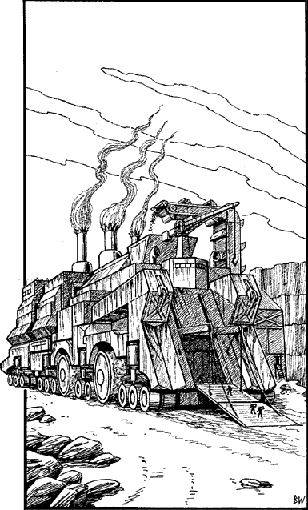

260
The Slavemaster dons a mask that covers his nose and mouth, through which he is able to breathe safely the noxious air that swirls outside his tower. He takes you to the outskirts of Aarnak in his personal chariot, to a vast, open-cast quarry. The means of your transportation to Helgedad waits at the edge of the quarry’s vast crater. Your jaw opens in amazement when you set eyes on the vehicle, for it is gigantic, by far the largest vehicle you have ever seen on dry land.

‘It is a Lajakeka, a “stone-taker”,’ says the Slavemaster, clearly amused by your awed reaction to this wheeled leviathan. ‘It is filled with ore, mined here at this crater, that is destined for the furnaces of Helgedad. You are to be a passenger on its return journey to the Black City. However, you will not be travelling alone. There are several Liganim, and some others besides, who will be fellow travellers. Be wary of them and remember all that I have said.’
Then he bids you farewell, and watches as you climb the wide ramp that leads into the belly of the steel beast. Inside it is not unlike a ship, with cabins for the travellers and crew, and interconnecting passages that service the vast cargo holds full of ore. The Giak crew members allocate cabins at random, and once you are safely inside yours, you pull the bolt and try to make yourself comfortable on an unpadded steel bunk. Then the screech of metal on metal and the dull throbbing of the Lajakeka’s engines fill your ears. The bunk shudders and your pulse quickens: your journey to Helgedad is underway.
You have been travelling for less than an hour when you hear a knock on your cabin door.
If you possess the Magnakai Discipline of Divination and have reached the Kai rank of Mentora or higher, turn to 298.
If you do not possess this skill, or if you have yet to reach this level of Magnakai training, and wish to open your cabin door, turn to 85.
If you do not possess this skill, or if you have yet to reach this level of Magnakai training, and wish to ignore the knock, turn to 144.